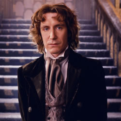

| Home | The Doctors | The Companions | The Villains |
|
|||
| cf
The Eigth DoctorAfter dying on the operating table, the Doctor regenerated into his eighth form in a hospital morgue, on December 31, 1999. Mercurial, frenzied and prone to bouts of amnesia, the Eighth Doctor teamed up with Grace Holloway to save the world from being pulled inside-out by the Master’s hijacking of the TARDIS. After a great many adventures away from the screen, the Eighth Doctor was last seen trying to avoid fighting in the Time War. He was killed in a spaceship crash on Karn, and temporarily revived by its Sisterhood, who begged him to save reality by offering him a choice of regenerative elixirs. But who would he be? Fast or strong? Wise or angry? With a universe at war no longer needing a doctor, he chose to become a warrior… |